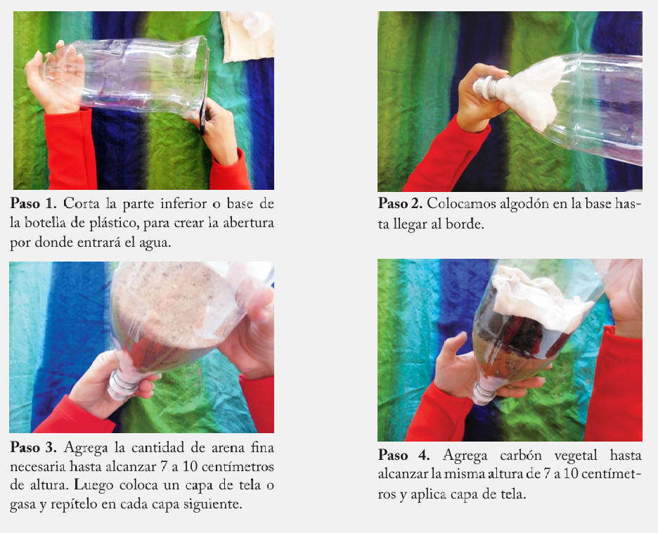
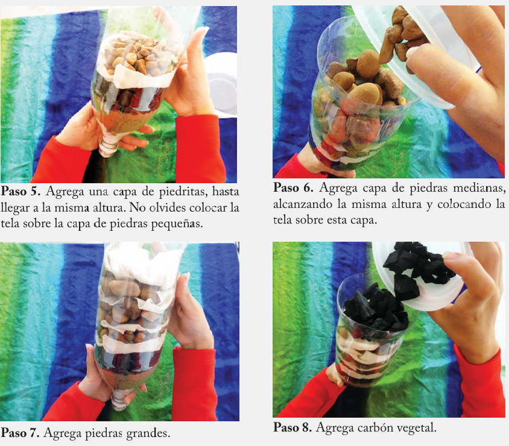
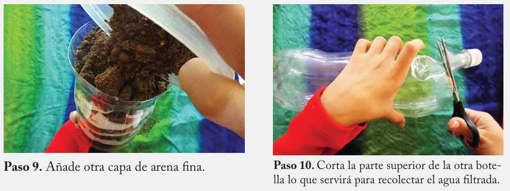

Un purificador de agua casero
Como ya hemos visto, el agua potable es aquella que puede ser consu
mida por el ser humano, ya sea para beber o para la preparación de los
alimentos, sin que signifique un riesgo para la salud. Para que pueda ser
bebida, el agua debe estar limpia, sin partículas que la hagan turbia, sin
olor, e insípida, sin un sabor determinado.
Materiales
Para elaborar el purificador debes contar con los siguientes materiales:
agua sucia, algodón, arena fina, telas o gasas, tijera, cortador, piedras peque
ñas, medianas y grandes, carbón vegetal. Ahora, sigue los siguientes pasos: Materiales
Para elaborar el purificador debes contar con los siguientes materiales:
agua sucia, algodón, arena fina, telas o gasas, tijera, cortador, piedras peque
ñas, medianas y grandes, carbón vegetal. Ahora, sigue los siguientes pasos:



Coevaluación: Recolecten agua de diferentes fuentes, y observen la forma en que se purifican. Anoten los resultados del experimento en su cuaderno.